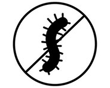

-
토양 준비
배수 잘되는 흙에 퇴비나
모래를 섞어 사용하세요. -
충분한 햇빛
하루 6시간 이상 햇빛이
드는 장소에 배치하세요. -
충분한 물 제공
흙이 마르면 충분히 물을 주되,
과습은 피하세요.
-
적절한 온도
18~25°C의 따뜻한 환경에서
키우시고 서리나 찬바람은
덮개로 보호하세요. -
넉넉한 공간과 지지대 사용
모종이 바람이나 무게로 쓰러지지
않도록 지지대를 세우고, 모종 간
공간(20~40cm)을 확보해 주세요.
-
영양 공급
2주 후부터 월 1~2회
저농도 비료를 사용하세요. -

병충해 관리
정기적으로 점검해 해충이나
병을 초기 제거하세요. -
잡초 제거
잡초는 모종 성장을 방해할 수
있으니 주기적으로 제거해 주세요.
인기 모종